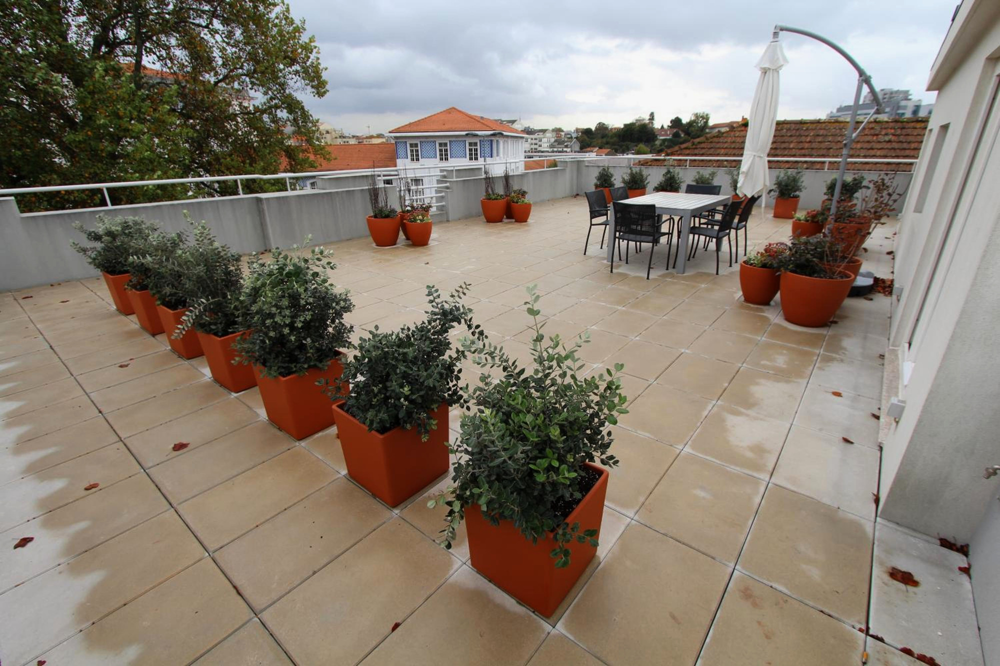
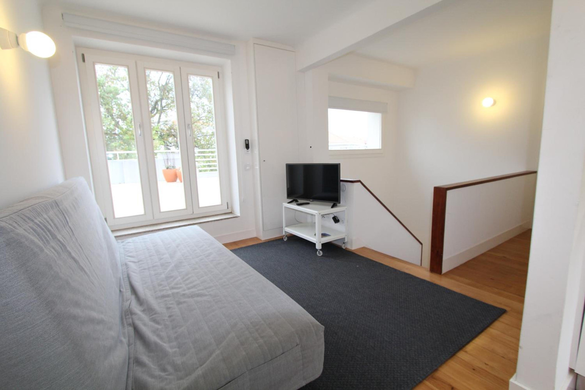
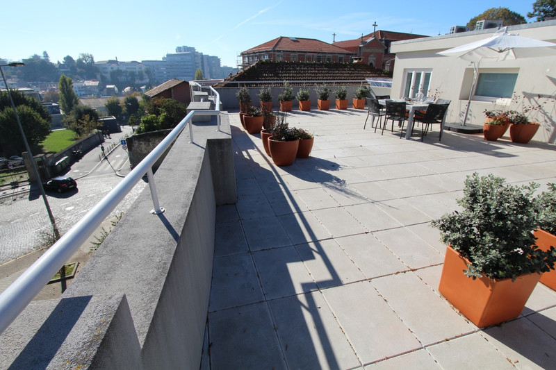
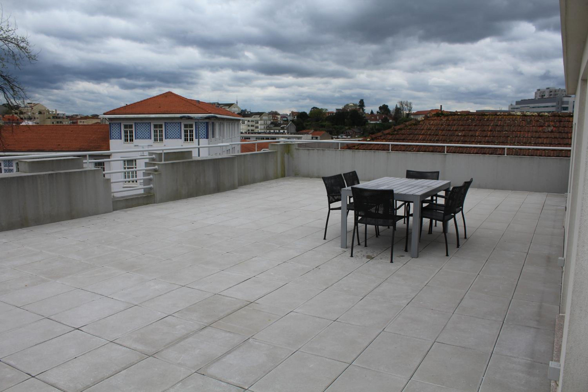
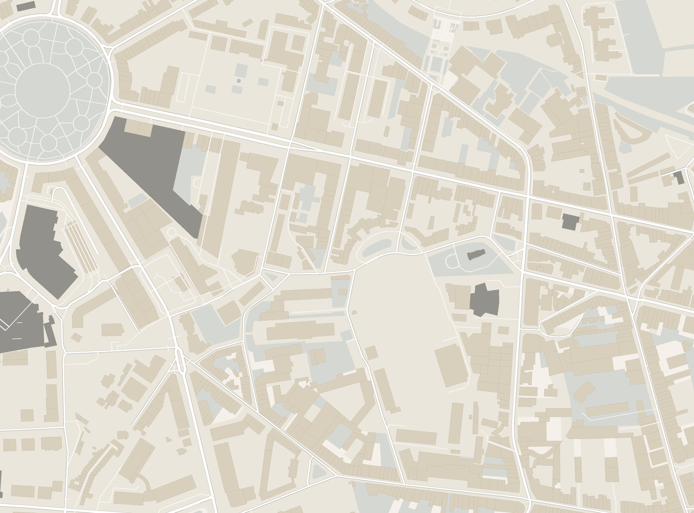
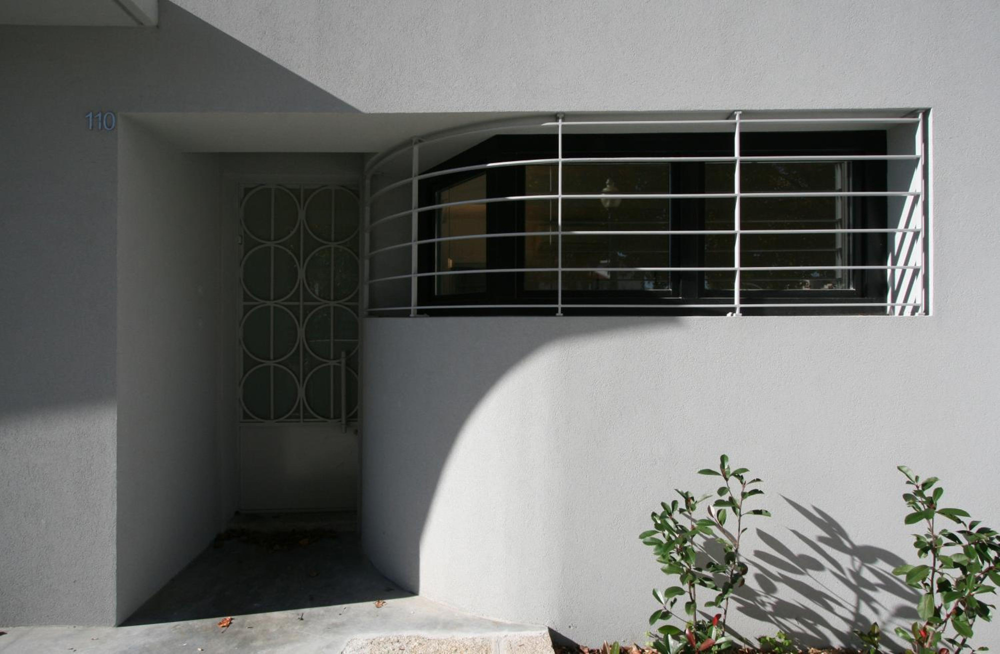

3.º andar · Praça de Pedro Nunes
Terraço112-R
T1 · 3.º andar com terraço · até 4 pessoas
- ~100 m²de terraço, segundo o dono
- 30 m²lá dentro, segundo o Booking
- 1quarto
- 4pessoas
01
Da praçaao terraço.
O 112-R fica no 3.º andar do prédio Art Déco da Praça de Pedro Nunes e tem um terraço privativo, à altura dos telhados, com cerca de 100 m² segundo o dono, mesa, cadeiras e guarda-sol.
Lá dentro há um quarto, uma sala com sofá-cama, a cozinha aberta e uma casa de banho com duche, para até quatro pessoas. O prédio não tem elevador: são três andares a pé.
Lovely huge terrace to enjoy some sun and outdoor dining.

01
A entrada
O portal Art Déco do prédio de 1936, na Praça de Pedro Nunes.

02
A sala
Sofá-cama, televisão e portadas envidraçadas para o terraço.

03
O terraço
Cerca de 100 m², segundo o dono, à altura dos telhados.

02
Cerca de 100 m²ao ar livre.
Mesa para quatro, guarda-sol e o céu do Porto por cima. «Fabulous rooftop», escreveu o Robert no Booking.
03
Lá dentro,um T1 inteiro.
O quarto
Duas camas individuais, um espelho grande e um tapete sobre o soalho.
A cozinha
Aberta para a sala, com placa, micro-ondas e a mesa junto à janela.
A casa de banho
Duche de vidro, lavatório e máquina de lavar roupa, sob a janela redonda.
04
No apartamento
Um T1 com o maior espaço ao ar livre do prédio.
Terraço privativo
Cerca de 100 m², segundo o dono, com mesa e guarda-sol.
Um quarto
E uma sala com sofá-cama.
Cozinha aberta
Para a sala.
Máquina de lavar roupa
No apartamento.
Ar condicionado
E aquecimento.
Wi-Fi
Em todo o apartamento.
Roupa e limpeza
Roupa de cama, toalhas e limpeza semanal.
Animais a pedido
Sem custo extra.
O que está incluído22 coisas que encontra no 112-R Terraço
No apartamento
- Um quarto
- Sala com sofá-cama
- Cozinha aberta para a sala
- Casa de banho com duche
- Máquina de lavar roupa
- Wi-Fi
- Ar condicionado
- Aquecimento
- Roupa de cama e toalhas
- Limpeza semanal
Lá fora
- Terraço privativo de cerca de 100 m² (segundo o dono)
- Mesa, cadeiras e guarda-sol
A pedido
- Limpeza extra
- Troca de roupa de cama e toalhas
- Berço de viagem, grátis
- Estacionamento privado, pago à parte
Bom saber
- 3.º andar sem elevador: sobe-se por escadas
- Check-in das 16:00 às 23:30
- Check-out até às 11:00
- Não se fuma; não há festas
- Animais a pedido, sem custo
- Taxa turística do Porto paga à chegada
05
Na Praçade Pedro Nunes.

Avenida da BoavistaRua de Júlio DinisRua da BoavistaRua de Aníbal CunhaRua de CedofeitaRua da TorrinhaRua Sacadura Cabral MCarolina MichaelisShopping Center BrasíliaHospital das Forças Armadas - Polo do PortoMercado do Bom SucessoHeróis da Guerra PeninsularLargo da PazLargo Luís BrailleJardim da Igreja Românica 112-R Terraço 200 mPraça de Pedro Nunes, 112, 3.º4050-466 Porto
- Metro Carolina Michaelis400 m
- Rotunda da Boavista650 m
- Casa da Música900 m
- Jardins do Palácio de Cristal1,4 km
- Torre dos Clérigos1,6 km
- Estação de São Bento1,9 km
- Ribeira2,4 km
- Praias5 a 7 km
Distâncias calculadas pelo Booking. Do aeroporto, o metro (linha E) chega a Carolina Michaelis sem mudar de linha.
Como chegar
06
Antesde chegar.
- Acesso
- 3.º andar, sem elevador
- Check-in
- 16:00 – 23:30
- Check-out
- até às 11:00
- Animais
- a pedido, sem custo
- Fumar
- não
- Festas
- não
Horários e regras do anúncio no Booking, iguais nos sete apartamentos. A taxa turística do Porto paga-se à chegada.

112-R Terraço 19 fotografias